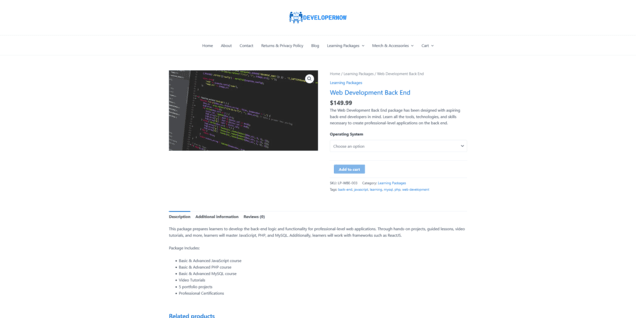
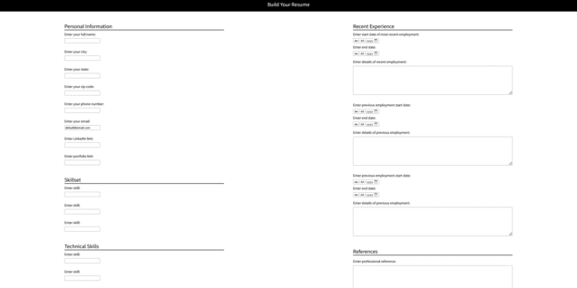

A fully responsive redesign of a North Carolina county website, incorporating Bootstrap,
and modern CSS techniques. This redesign features a modern look and feel as well as
greatly improved UI/UX. The stack for this project includes HTML5, CSS3, and Bootstrap.

View Site
A fully functional e-commerce site built on the WordPress CMS and utilizing WooCommerce
functionality. Features include product pages, checkout and payment processing, inventory
management, fully responsive design, and SEO optimization.

View Site
An easy to use web application that allows users to quickly create their resume through interaction with a web form.
Custom JavaScript code provides functionality for storing user information, form validation,
and dynamic resume generation.

View Site